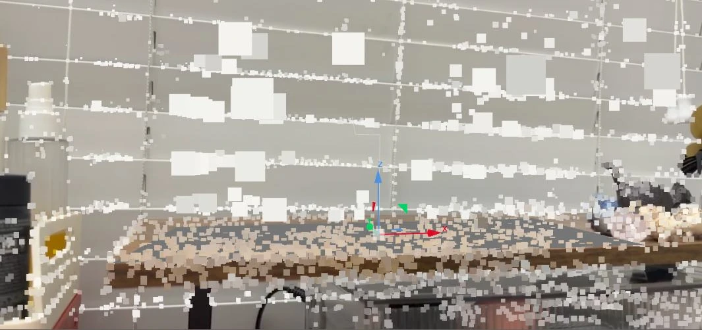
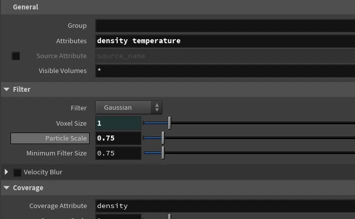
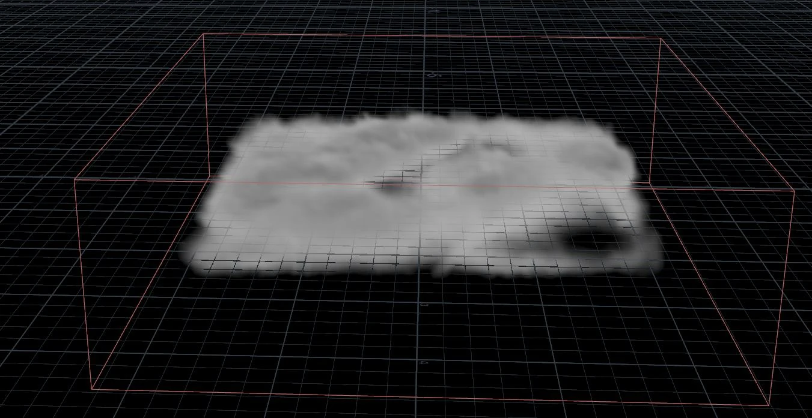
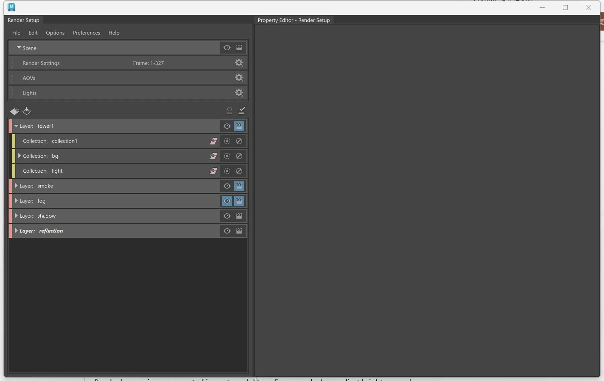

Case Study · March 2026
Steam Clock Integration
An end-to-end live-action VFX shot integrating a CG steam clock through camera tracking, asset development, volumetric effects, layered rendering, and compositing.
RoleVFX Integration
ToolsMaya · Houdini · Nuke
DateMarch 2026
Establishing a reliable camera
The plate was camera-tracked in Nuke and transferred into the 3D pipeline. Focal length and perspective were iteratively corrected to anchor the clock to the photographed environment.

Localized smoke and atmospheric fog
A Houdini Pyro simulation produced the clock's smoke plume and was exported as VDB for Maya. A separate density-volume setup created broad procedural fog for depth.


Layered control for compositing
Arnold Render Setup separated the clock, smoke, fog, shadows, and reflections so each contribution could be refined independently.

Matching light, material, and perspective
Nuke iterations addressed emission transparency, focal mismatch, shader inconsistency, and material color until the CG element shared the plate's lighting and spatial logic.